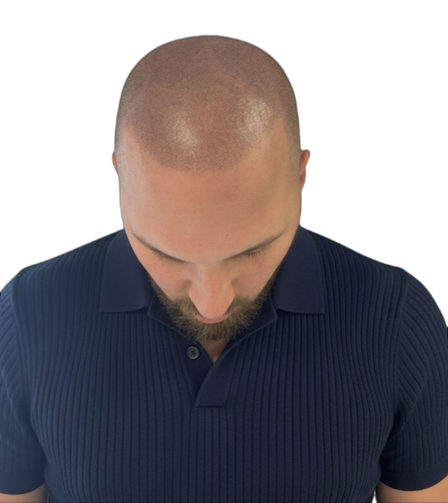
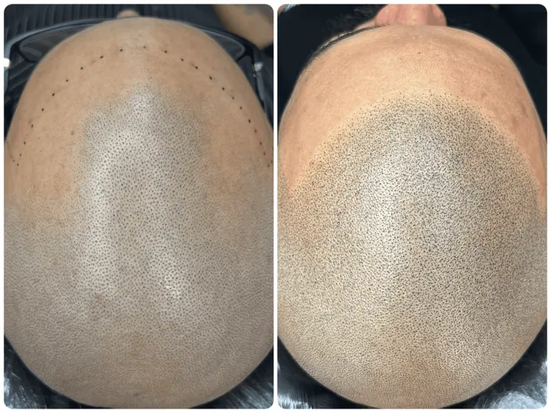
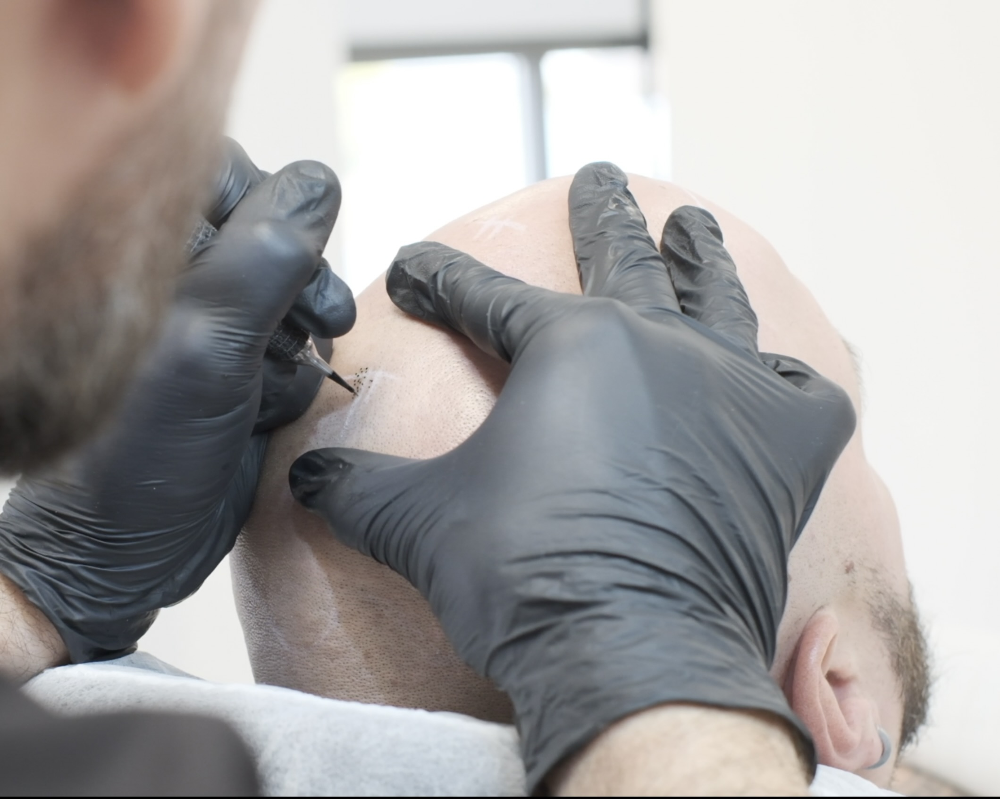
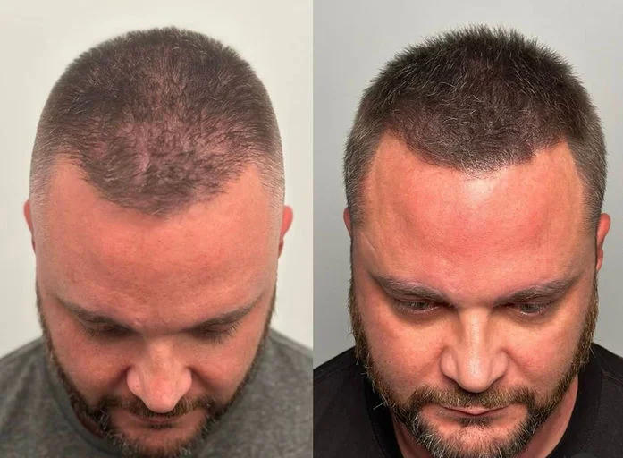
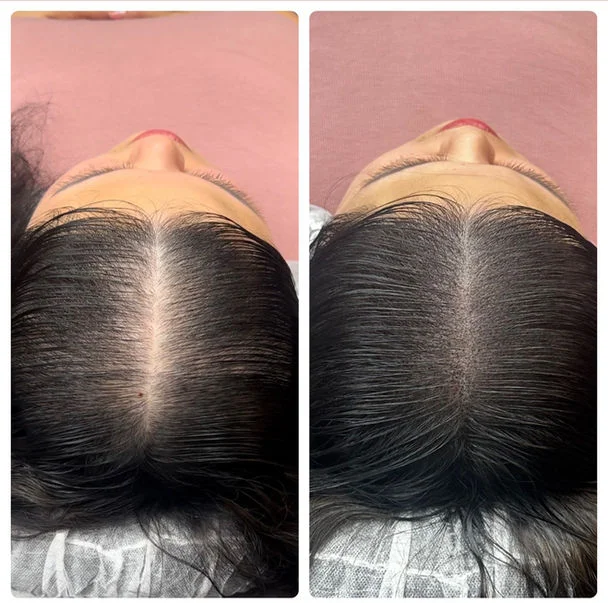
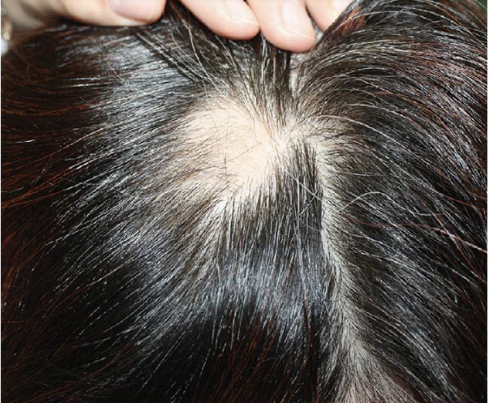
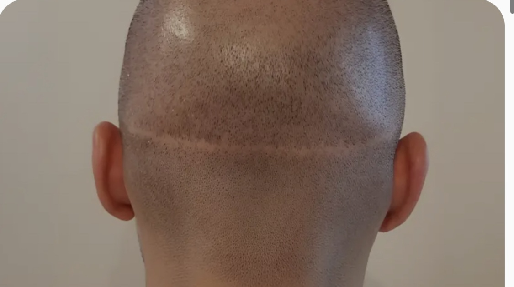
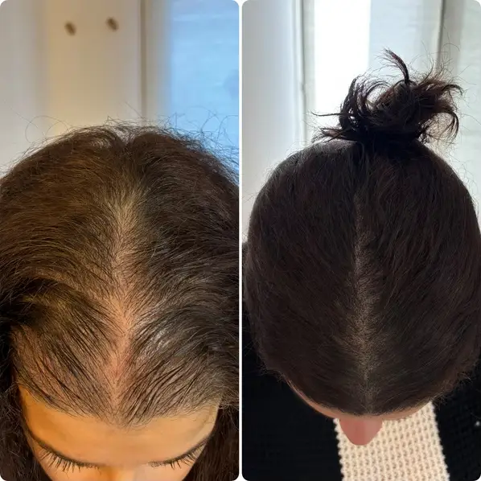
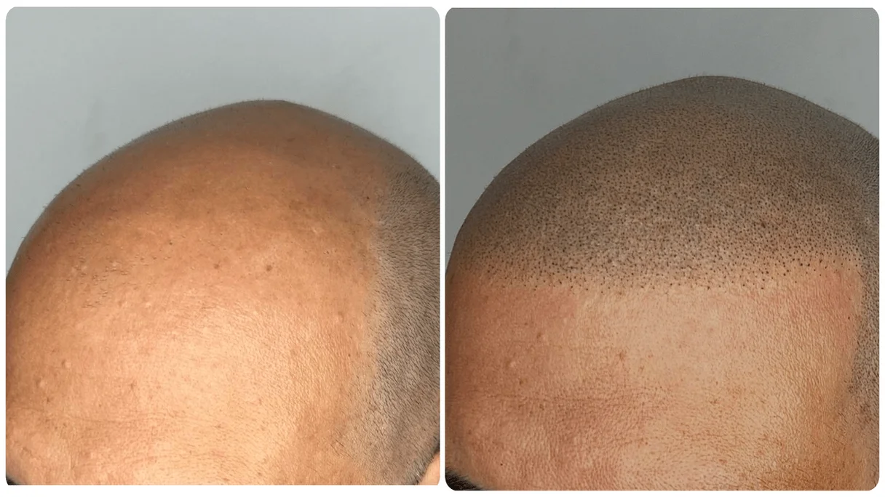
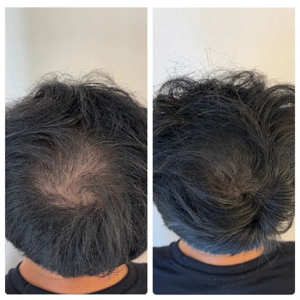

Solution sur mesure qui s'adresse aux hommes et aux femmes pour une confiance et une assurance retrouvée. Techniques de densification capillaire, effet crâne rasé et camouflage de cicatrices du cuir chevelu.
Retrouvez confiance en votre image, plus forte et plus attrayante. Notre solution vous permettra de transformer un défaut majeur en véritable atout. Votre calvitie, votre pelade ou vos cheveux clairsemés ne vous gâcherons plus la vie.
Ne soyez plus « chauve », adoptez un look effet rasé de près ! Que ce soit par souci d'esthétisme dû à un manque de cheveu, ou pour réellement changer votre vie, vous paraîtrez naturellement plus jeune et votre image en sera plus confiante.
Commencer maintenant

Une technique révolutionnaire qui offre des résultats bluffants, naturels et durables.
Nos experts imitent parfaitement les follicules pour un rendu bluffant ultra réaliste.
Résultat visible en 3 à 4 séances seulement, espacées de 10 à 20 jours.
Technique non invasive, sans chirurgie ni effets secondaires durables.
Le résultat tient 4 à 6 ans avec un entretien minimal. Plus besoin de rituels quotidiens.
De l'alopécie légère à totale, pelades, cicatrices de greffe — homme ou femme.
Devis personnalisé dès la consultation gratuite. Séances supplémentaires offertes si nécessaire.
La micropigmentation capillaire, appelée aussi dermopigmentation, tricopigmentation ou SMP (ScalpMicroPigmentation), est une technique non chirurgicale révolutionnaire qui recrée l'apparence de follicules pileux à l'aide de pigments médicaux français bio résorbables déposés dans le cuir chevelu.
La micropigmentation peut être également utilisée pour donner un effet de densité à la chevelure, on parle alors de densification. Cette solution est idéale pour les personnes souffrant de calvitie, d'alopécie, de pelade, ou souhaitant densifier une chevelure clairsemée.
Contrairement aux implants capillaires (greffe FUT/FUE), la micropigmentation est rapide, sans douleur et offre un rendu ultra réaliste — comme une coupe fraîchement rasée, parfaitement nette.
Consultation gratuite Voir le témoignage complet d'Alexis
Grâce à une approche de visagisme diplômée d'état, nos experts MPC Clinique vous guideront afin d'avoir un effet ultra naturel en fonction des asymétries naturelles du visage et de son expression.
Chaque traitement est entièrement personnalisé : nous adaptons la ligne frontale, la densité et les teintes à votre morphologie, votre carnation et vos envies pour un résultat qui vous ressemble parfaitement.
Voir les résultatsLe patch test est un moment important lors du premier rendez-vous. Il permet au praticien de choisir différentes teintes adéquates en fonction de votre carnation et d'évaluer votre cuir chevelu. C'est aussi l'occasion d'être rassuré sur les sensations et de répondre à vos éventuelles craintes. Cette pré-séance est fortement préconisée. Le tarif de cette pré-séance (48 €) sera ensuite déduit du traitement complet.
Je demande mon patch test
Nous couvrons l'ensemble des situations de perte de cheveux avec une solution sur mesure.

Crée l'apparence de cheveux plus volumineux et sans manque de densité.

Restaure une ligne de cheveux naturelle et plus jeune.

Camoufle la perte de cheveux partielle ou complète due à des affections telles que l'alopécia areata.

Dissimule les cicatrices FUT/FUE en mélangeant la micropigmentation avec les cheveux environnants.

Ajoute de la densité et réduit le contraste entre le cuir chevelu et les cheveux.

Recrée efficacement un effet coupe de cheveux très courte pour un look soigné.
Des résultats qui parlent d'eux-mêmes, validés par nos patients satisfaits.
Honnêtement… je ne pensais pas que ça me ferait autant de bien. Pendant longtemps, j'évitais les miroirs, les photos, même certains éclairages… Puis j'ai sauté le pas. Aujourd'hui, quand je me regarde, je ne vois plus ces zones qui me complexaient. Je vois quelqu'un de propre, sûr de lui, aligné avec son image. La pigmentation capillaire n'a pas juste changé mon apparence… elle a changé ma façon de me sentir au quotidien. C'est discret, naturel, personne ne devine. Mais moi, je le sais… et ça change tout.
C'est comme remonter dans le temps, le rendu est top et naturel. Je prends à nouveau du plaisir à me voir dans le miroir, merci infiniment.
Après des années de cheveux clairsemés, j'ai enfin retrouvé confiance en moi. Les résultats sont si naturels que la plupart des gens n'ont pas remarqué. Ce changement est vraiment révolutionnaire pour moi !
J'étais sceptique au départ, puis le personnel m'a rassuré. Les résultats parlent d'eux-mêmes ! Le traitement s'est bien déroulé, c'est parfait.
L'équipe est sympa, je suis ravi du rendu. J'avais un début de tonsure sur le haut depuis mes 26 ans, et maintenant c'est fini l'effet moine ! Allez-y, vous ne serez pas déçu, bien au contraire.
Service à l'écoute et bienveillant, merci encore !
Technique très novatrice ! Prestations très adaptables selon la demande précise (on a pas tous les mêmes objectifs ni la même implantation 😉) Force de proposition, à l'écoute et de très bons conseils ! La prestation se réalise en plusieurs étapes, l'occasion de voir progressivement l'avancée, la vivre, faire une transition douce (pour l'entourage aussi) et faire adapter les prochaines étapes de la pigmentation ! L'adaptabilité est le mot clé ! Nous sommes aux petits soins :)))
Un vrai professionnel ! Conseils personnalisés, travail très propre et sérieux, et résultat bluffant. Je recommande très chaleureusement !
C'est la meilleure décision que j'ai prise de ma vie ! Le rendu est incroyable.
Retrouvez les réponses aux questions les plus posées sur la micropigmentation capillaire.
Cela dépend de l'importance de la zone à traiter. Il sera toujours fixé le jour de la première consultation. Si toutefois une séance supplémentaire est jugée nécessaire pour un résultat parfait, elle ne vous sera pas facturée en plus, votre satisfaction étant notre priorité.
La micropigmentation du cuir chevelu est un traitement non invasif qui utilise des microaiguilles spécifiques pour déposer du pigment dans le cuir chevelu. Le résultat crée l'apparition de minuscules follicules pileux ou de racine de cheveux courts. Si vous commencez à perdre en densité, les cheveux existants auront l'air plus épais en racine. Si vous êtes complètement chauve, nous pouvons vous donner l'apparence d'une coupe courte.
La plupart des patients peuvent s'attendre à terminer leur traitement entre 2 et 4 séances en fonction de l'étendue de la perte de cheveux ou des cicatrices. Ces traitements sont généralement espacés d'environ 10 à 20 jours.
Le traitement prend généralement 2 à 4 heures par séance en fonction de votre degré de perte de cheveux.
Les résultats durent généralement 4 à 6 ans, après quoi un léger estompage peut nécessiter une retouche. Nous utilisons des pigments bio résorbables certifiés (Biotic Phocea, CeIIb), ce qui les distingue des encres de tatouage classiques qui peuvent virer au vert ou au bleu avec le temps.
Pour la plupart des patients, la douleur est vraiment minime et toujours beaucoup moins douloureuse que les tatouages traditionnels. On ressent plus une sensation de picotement léger. Après votre séance, vous ne ressentirez plus d'inconfort.
Oui, ceux qui ont des cheveux gris peuvent encore bénéficier de la procédure. Nous utilisons un pigment spécifique de gris qui peut être ajusté pour se mélanger avec des tons de cheveux plus clairs, créant simplement une dilution plus légère pour le mélange dans les cheveux gris existants.
Oui, près d'un patient sur 3 consulte pour camoufler des cicatrices. Nous sommes spécialisés dans le recouvrement FUE/FUT et d'autres cicatrices sur le cuir chevelu.
Il y a trois différences principales :
Nous recommandons de ne pas transpirer abondamment (sauna, hammam) ou faire de l'exercice intense pendant 4 à 5 jours après votre traitement.
Non, la consultation initiale est entièrement gratuite. Vous pouvez nous contacter via le formulaire de contact ou WhatsApp pour envoyer vos photos et exprimer vos besoins. Nous vous proposons alors la meilleure solution ainsi qu'un tarif personnalisé.
Non, le traitement ne fera pas repousser vos cheveux. Cependant, il vous donnera l'apparence de cheveux courts ou d'une coupe rasée de près. En densification, il donnera un aspect visuel de cheveux plus épais tout en conservant votre longueur habituelle.
Des articles rédigés par nos experts pour tout savoir sur la micropigmentation capillaire.
Comparatif complet pour vous aider à faire le bon choix selon votre situation et votre budget.
Lire l'article →La pelade provoque des pertes en plaques imprévisibles. La micropigmentation offre un camouflage immédiat et naturel.
Lire l'article →
Peu de cliniques le proposent, pourtant c'est l'étape la plus rassurante avant de se lancer.
Lire l'article →Contactez-nous dès maintenant pour une consultation gratuite et un devis personnalisé. Partagez vos photos via WhatsApp ou notre formulaire de contact.